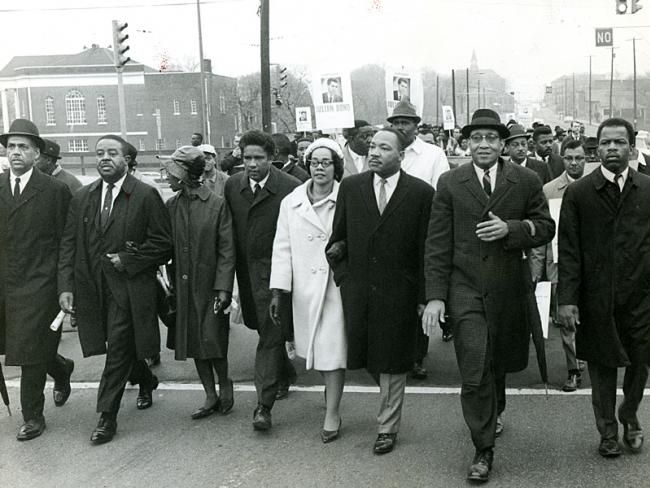
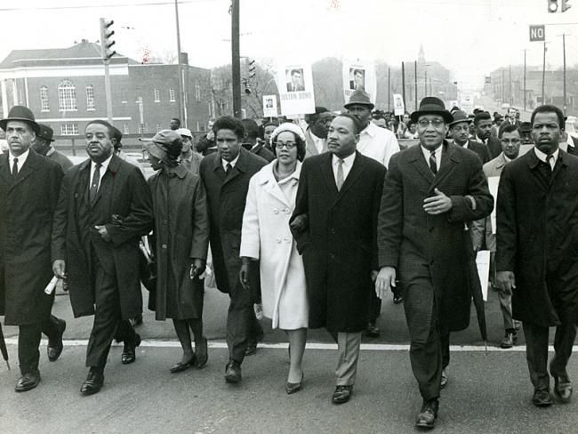
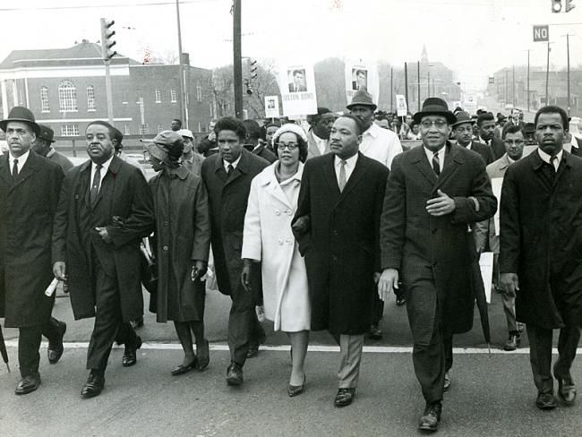

The Southern Christian Leadership Conference
Founded in 1957 to coordinate Southern protest groups
Inspired by the success of the Montgomery bus boycott
Dedicated to nonviolence, "no matter how great the provocation"

Founded in 1957 to coordinate Southern protest groups
Inspired by the success of the Montgomery bus boycott
Dedicated to nonviolence, "no matter how great the provocation"
White clergymen in Alabama called for negotiation over protest.
Dr. King and the Southern Christian Leadership Conference were accused of being outside agitators coming to Alabama to cause unrest.
White moderates, who were sympathetic to the idea of desegregation, insisted on going through the courts to contest violations of rights instead of taking to the streets.
Dr. King was arrested in Birmingham for protesting without a permit.
Responded to "A Call for Unity" and defended the SCLC's strategy of civil disobedience
Perhaps it is easy for those who have never felt the stinging darts of segregation to say, "Wait." But when you have seen vicious mobs lynch your mothers and fathers at will and drown your sisters and brothers at whim; when you have seen hate filled policemen curse, kick and even kill your black brothers and sisters; when you see the vast majority of your twenty million Negro brothers smothering in an airtight cage of poverty in the midst of an affluent society; when you suddenly find your tongue twisted and your speech stammering as you seek to explain to your six year old daughter why she can't go to the public amusement park that has just been advertised on television
People have a right to stand up to injustice anywhere in America without being labeled as an outsider causing trouble.
The white moderate is more devoted to order than justice; "Lukeworm acceptance is much more bewildering than outright rejection."
When critized for breaking the law by protesting, Dr. King argued there are just and unjust laws, and one has a moral responsibility to disobey such unjust laws.
The answer lies in the fact that there are two types of laws: just and unjust. I would be the first to advocate obeying just laws. One has not only a legal but a moral responsibility to obey just laws. Conversely, one has a moral responsibility to disobey unjust laws. I would agree with St. Augustine that "an unjust law is no law at all"... Thus it is that I can urge men to obey the 1954 decision of the Supreme Court, for it is morally right; and I can urge them to disobey segregation ordinances, for they are morally wrong.
In the Letter from a Birmingham Jail, Dr. King describes standing in the middle of "two opposing forces" within the black community.
Some black people had become complacent with segregation, and others demanded more radical action.
The SCLC was criticized as being too moderate and dependent on white liberal support in part due to its commitment to nonviolence.
Unlike Nelson Mandela's armed strategy in South Africa
White moderates still criticized the SCLC as being too extreme.